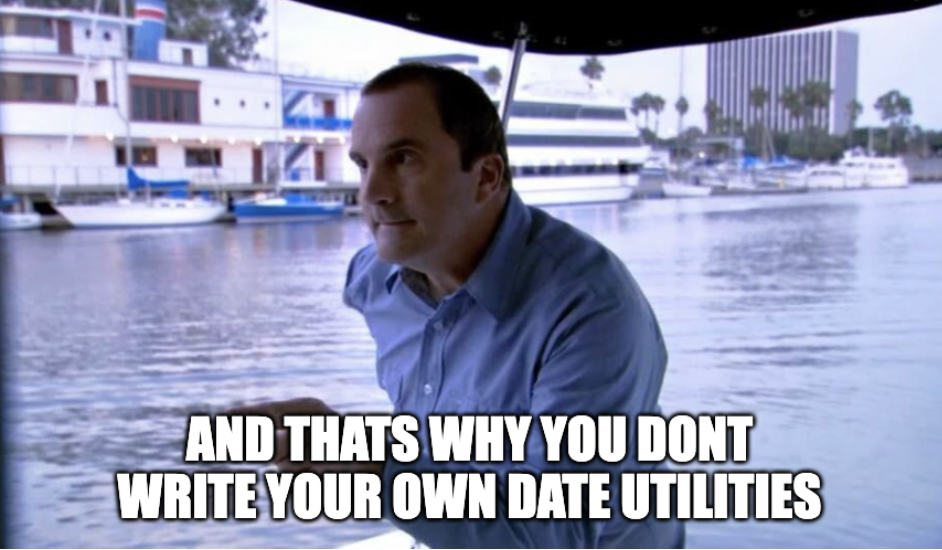

Published {% prettyDate date %}, {% readTime page %}
I was assigned a pretty straightforward bug last week: we were miscalculating
the end of day datetime. When a date was
2025-09-13T12:24:11.181+03:00, we needed to check to see if that
datetime was the "end of day"
Why would need this? We needed to represent a date range up to and including a
particular day. So the date filter that needed to be created was basically
this:
time <= endOfDay(date). And when we're parsing queries that
include this "end of day" value, we need to be able to recognize it.
Also, before you ask, we couldn't support strict inequalities yet. We had to do less than (or greater than) and equal to. So we did indeed need to calculate the end point of that inequality- the end of day.
We just needed a isEndOfDay() function. How hard can it be?
I knew this, but I didn't really know this, you know?
I figured that I could just write a function that would check the hour,
minute, seconds, and milliseconds and see that it is indeed the last
millisecond of the day. So my function would take in a date and then check if
the time is
23:59:59.999.
Interesting....
What's funny is that someone else in my company started this logic, and the above worked for date times even in UTC (the third date in the above example). The example above will actually work for a subset of internet peoples: the ones in +00:00 time zones! And this dev was from London. So their local time calculates locally and happens to line up with UTC. During daylight saving's time I'm not so sure this would align.
It's important to note too that when you're dealing with datetime inputs in
javascript, they are all considered based on your locale. When you pick a date
and time from a
datetime-local
input, the Date object you receive will be from your locale
automatically.
Check it out:
toString():
So what I thought was we could amend this function. What if I found the date-time offset and used that to get the hours in UTC? That way I could check both the local time and the UTC time and see if either is end of day.
So, I boldy moved on to get the "UTC hour" by getting the offset for the date and adjusting the hours. I quickly found that the offset came back as a number of minutes. "Weird," I thought. I vaguely remembered there might be a time zone that was a half an hour off in India, but I thought I could do a quick adjustment for that later...
{% include "./example2.html" %}
"Too easy," I thought to myself. And, indeed, things were not alright. In the
example above you may be wondering why I thought I was done, because the
function wasn't working in your browser. I live in -05:00, and so
I did the same thing my colleague did in London. I happened to use an offset
that matched my computer timezone offset.
I knew there might be edge cases in different time zones, so I tested a whole bunch of "end of day" date time strings. Some were locally "end of day," and some were "end of day" in UTC.
{% include "./example3.html" %}
Indeed, when asking for the offset, it's always the offset of your machine's
local versus 00:00. When a Date is parsed in javascript, the date
instance you have in hand
does not retain the offset it used to parse the date. So when
I tested many different offsets in the beginning string, they all did not
calculate correctly.
What I was looking for was a way to keep the timezone along with the date, so that I could inspect the time as if my computer was in that time zone. This isn't something that we can do natively yet.
Another thing I was about to encounter along with this hour offset issue was that offsets are in minutes because some timezones are a half-an-hour off, and some are even 45 minutes off. We were going to start going into murky waters just thinking about those offsets, and we hadn't yet considered daylight savings 😱

Trust me, I knew this intellectually. But I still went down this path.
For me to make up for this loss of timezone information, we'd have to store the local information separately. This means I'd have to parse the offset off of the string and store the locale/timezone along with the date in my own data structure. This is something I could implement... but there are libraries for this.
I know that moment.js can do this. I haven't used it yet, but I know people who swear by the library. Alternatively, there's date-fns. This is lighter than moment.js, and I prefer it when I need to do date-intensive stuff.
More specifically, there is
date-fns/tz which provides a way
to store locale along with your time instance in a
TZDate instance. This is a very thin wrapper that is compatible
with date-fns, and this way you can use date-fns functions with a TZDate
seamlessly.
date-fns also provides really handy utilities, such as
endOfDay(), which I
could have used from the beginning to do these calculations. There might still
be a way to retain the locale, use date-fns/tz and
endOfDay together, but I later found out that we do no locale
storing when dates are coming from user UI. More on that later.
Ulitmately, there's a new native feature I'm sure all of us are waiting for that allows us to handle date times in different timezones as if our machine was in those zones:
There is a specific API called Zoned Datetime that I eagerly look forward to using some day. In the meantime, we need to use some sort of library.
I basically when down the road of this famous video, despite knowing this was probably foolish! If you haven't seen it, please, I beg you, watch this video!
Most importantly, I learned that I had not defined the problem sufficiently to understand that there wasn't a solution based on the architecture we currently had and the functionality provided from javascript.
I was in a situation where dates could come from two sources. One from
developers manually writing date strings in docuemnts. In those cases we could
instruct those developers to write their date times with an offset of
+00:00. But the other source was users using the inputs we
provided on the page, and they were native datetime-local inputs. We didn't
make a concerted effort to make sure all times were calculated in UTC (I found
out later this indeed was a technical requirement for the project.)
There came a point where we realized we had one set of logic to parse either of those situations. And to make matters worse, we had a concept of a user's preferential locale. It might be that the user is on the west coast, but wants to see all date times in central time.
We will eventually get this all organized and sorted, but at the time we found that we had a parsing situation that wasn't soluble in the near term. It would have been simpler had I asked a few questions up front. Do we store all our information in UTC? Do we do all our calculations in UTC? Does the user need to see their local datetime formatted in UTC to give the user feedback about their selections? When we select something like "end of day," which time zone do we mean that for? What if a user selects end of day in a timezone with offset "+02:00" but a user opens the same page and they're in a locale with offset "+12:45" becuase they're in New Zealand but they prefer a locale offset of "+08:00" to match with Singapore?
Dates are famously not fun in Javascript. Check out this quiz which demonstrates how crazy dates can get: https://jsdate.wtf/
I hope you were able to have a chuckle over this, and maybe you could relate the path that I travelled down. Let me know what you think. {% socials %}